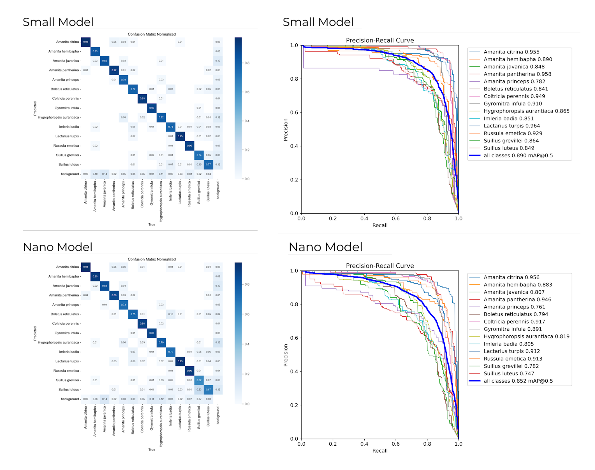
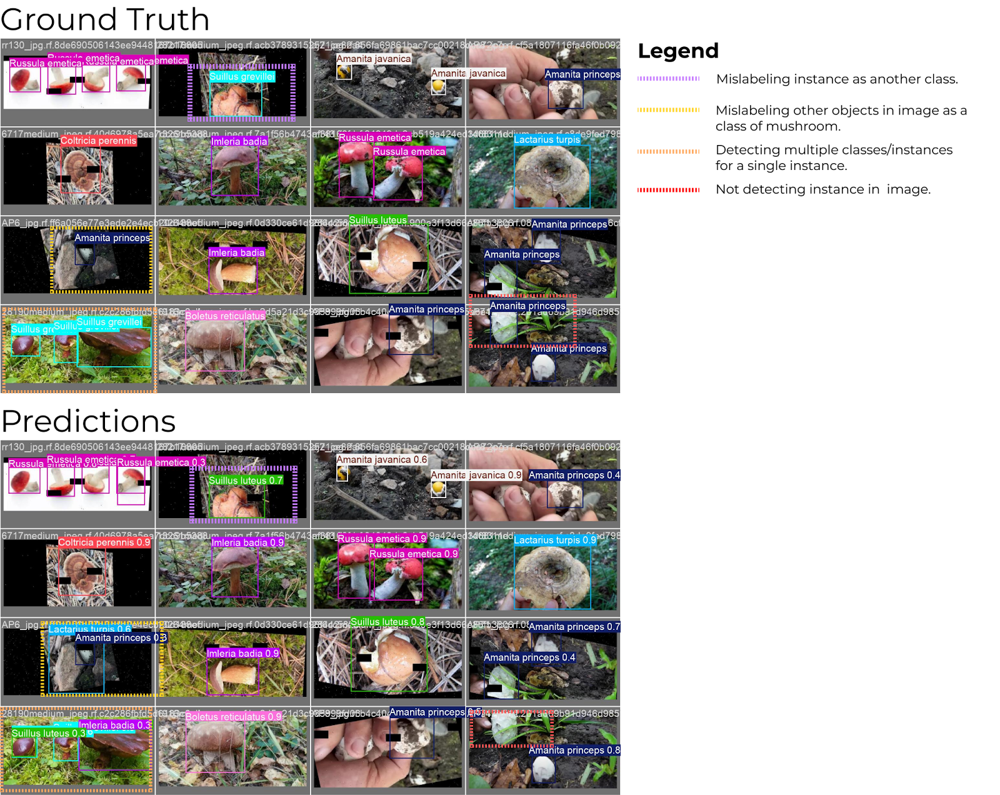

Mushroom Identification AI Model Training
Developing a real-time computer vision model to detect and classify various mushroom species using image datasets.
Project Overview
This project involved building a real-time mushroom detection and classification system using YOLOv8 and Roboflow. The primary goal was to identify different mushroom species from live camera footage, providing a potential tool for nature enthusiasts and foragers. The system is capable of detecting multiple mushroom types simultaneously and drawing bounding boxes around them in real-time.
Model Development & Training
The project started by sourcing and preprocessing mushroom images, which were annotated and prepared in Roboflow for YOLOv8 training. Using the Ultralytics YOLOv8 framework in Python, we fine-tuned the model with transfer learning to improve mushroom detection accuracy. The trained model was then integrated into a real-time webcam pipeline with OpenCV, displaying bounding boxes and class labels on live video.
We optimized the model through iterative training, adjusting hyperparameters such as epochs, learning rate, batch size, and image augmentation to improve metrics like precision and mean average precision (mAP). Key improvements included using cosine learning rate scheduling, HSV augmentation, and increasing batch size to 16 to balance class predictions. Training beyond 8 epochs led to overfitting, so we settled on that as the optimal stopping point. The best model, from session six, achieved a precision of 0.8242 and a mAP50-95 of 0.6646, providing a robust foundation for real-time mushroom classification.
Final Hyperparameters: Epochs: 8; Patience: 5; Batch Size: 16; Learning Rate: 0.001; Cosine LR Scheduling: Enabled; HSV Augmentation: hsv_h=0.015, hsv_s=0.9, hsv_v=0.9.
Challenges & Solutions
One major challenge was the limited variety and quantity of annotated mushroom images, which initially caused lower detection accuracy. We addressed this by augmenting our dataset using Roboflow's preprocessing tools to increase image diversity. Another challenge was the speed-performance tradeoff in real-time detection. To resolve this, we optimized model size by selecting a lightweight YOLOv8 variant and reducing input resolution, which maintained acceptable accuracy while improving frame rates.
Impact & Outcome

Confusion matrix and Precision Recall graph of the final models.

Real-time mushroom detection output showing the ground truth and predicted bounding boxes.
The trained models reliably detect and classify various mushroom species in real-time. High image quality and targeted augmentation were key to handling varied lighting conditions, improving robustness. This project demonstrated the full YOLOv8 workflow—from data preparation with Roboflow to model deployment—and provided valuable hands-on experience with real-time computer vision applications.